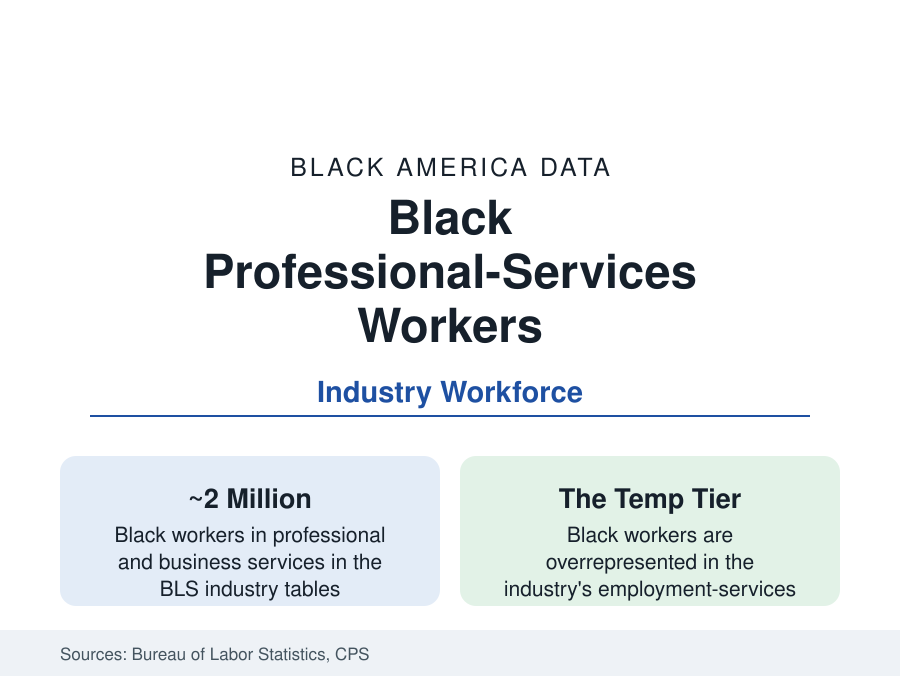

Black Employment
Black Workers in Professional and Business Services: The Office Economy's Middle
Professional and business services employ about two million Black workers — from law-firm staff to temp agencies. The BLS industry data.

Professional and business services is the economy's white-collar engine room — law and accounting, consulting and advertising, architecture and staffing — employing roughly two million Black workers. It is also the industry whose internal range is widest: the same BLS sector holds the partner-track associate and the day-labor temp, and Black workers distribute across that range in a pattern that summarizes the modern office economy. This article reports the industry's workforce data.
The Sector's Two Economies
The CPS industry tables split the sector against itself. In employment services (temp agencies and staffing) — the sector's largest low-wage component — Black workers form a share well above their workforce average, staffing the warehouses, call centers, and clerical pools of the temp economy, with the temp-to-perm conversion rates and the no-benefits structure the staffing data document. In the professional core (legal, accounting, consulting, advertising, computer services) the shares invert: Black professionals are present at mid-single-digit percentages in the partnership-track occupations — the law firm data (NALP's annual diversity report: Black associates in the mid-single digits percent, Black partners around two percent) and the Big Four accounting firms' published diversity data (Black professionals similarly in the mid-single digits, partners lower) quantifying the pyramid. Between the poles sit the sector's great middle: the administrative and office-support workforce (the industry's and the economy's, heavily Black and female — the workforce profile's clerical backbone), the security and building-services contractors (the sector's services tail, employing Black workers at the wage floor), and the call-center and business-process operations.
Law and Accounting: The Counted Pyramids
The professional firms publish the data that make this file precise. Law: the ABA and NALP series track Black lawyers at roughly five percent of the profession (the legal-education profile's pipeline arriving at the bar), concentrated in government, corporate counsel, and small practice; the large-firm pyramid narrows by the year of seniority in the attrition tables, with the partnership data's two percent the summit statistic and the lateral market's data showing the recycling of the same senior cohort between firms. Accounting follows the same shape (Black CPAs around two percent of the profession in the AICPA's counts — a figure the profession's own initiatives have moved at decimal pace for decades) with the Big Four's campus pipelines and the HBCU accounting programs (a historic strength — several of the business schools of the education file built their reputations on CPA placement) as the inflow. Consulting and advertising post their own versions (the major consultancies' published class data, the ad industry's diversity census long the whitest of the white-collar counts in the trade data), and the tech-services component connects to the technology profile's seven-to-eight percent.
The Staffing Economy's Racial Data
The temp tier deserves its own paragraph because its data are the sector's shadow: the staffing industry's workforce is disproportionately Black and Latino in the BLS and industry data, its assignments concentrated in the logistics, manufacturing, and clerical work of the other profiles, its economics (the markup between the bill rate and the wage, the conversion fees) extracting a toll measured in the wage studies, and its injury and unemployment-insurance patterns externalizing risk onto the worker in the regulatory literature. The sector's defense — the bridge function, measured in the conversion data at modest rates — and its critics' file (the permatemps, the race-and-gender assignment patterns the ethnographic and legal records document) are both in the literature; the reference reports the structure: the economy's flexibility is disproportionately staffed by Black workers without the economy's security, inside the same industry code as its most secure professionals.
The Climb and Its Institutions
The mobility machinery inside the sector: the professional associations (the National Bar Association and the Black accountant and consultant networks — some the oldest Black professional organizations in the data), the firms' own diversity pipelines and their published scorecards, the supplier-diversity consultancies and the Black-owned professional firms of the business file competing for the sector's contracts, the government-affairs and compliance functions where the public-sector profile's alumni circulate, and the business-development rainmaking that the partnership data identify as the final gate (origination credit — the law firm compensation literature's decisive variable — distributing by the networks the social capital data map). The administrative workforce's own ladder (the office manager, the paralegal, the executive assistant to the C-suite — the roles from which a disproportionate share of Black corporate institutional knowledge is actually run) is the file's undervalued middle.
Reading the Professional-Services Data
Professional services is where the modern economy keeps its gatekeepers — the lawyers who paper its deals, the accountants who bless its books, the consultants who bless its layoffs — and its data show Black workers staffing the building at every floor while holding about two percent of its corner offices. The industry's own product is expertise in other people's advancement; its internal tables are the standing irony, and the standing agenda, of this file.
More in Black Employment
The Black Unemployment Rate: The Two-to-One Pattern
Black unemployment runs at roughly twice the White rate — 5.5 percent against 3.3 percent in annual averages — a ratio stable across five decades of federal data. How it is measured and why it persists.
Black Median Weekly Earnings: The 80-Cent Ratio
Black full-time workers earn a median of about $900 a week — roughly 80 cents for every dollar White workers earn. The BLS earnings data by group, gender, and occupation.
Black Labor Force Participation: Working at National Rates
Black labor force participation runs at roughly the national rate — and Black women participate at higher rates than White women. The BLS participation data.
Source: U.S. Bureau of Labor Statistics, Current Population Survey industry data; American Bar Association and NALP legal workforce data; staffing industry data.